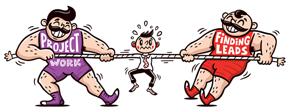

Workshop is about less.
If you're looking for hundreds of freelance leads in your inbox everyday, then it's not the right service for you.
Anyone who's had a freelance business understands dryspells can make you desperate, but contacting every lead under the sun only perpetuates this vicious cycle.
Workshoppers tend to understand that. It's counter-intuitive, sure, but it's far more effective to contact a select few opportunities that fall within your specialty, then to try being the do-it-all freelancer.
That's why we send fewer leads. That's why we only send the right leads for our members. Cherry-picked from the best job boards, then hand-curated into a daily email that even the busiest freelancer can digest.
Our members have benefited. Job boards no longer suck up all their billable time, they no longer teeter-totter between work overload and an empty checking account—some have landed huge projects, or even full-time remote dream jobs from Workshop's short life span. All have saved the most precious thing of all; time.
"Man you are really kicking ass. I feel like you're doing all of the work and I just get to be all la-tee-da over picking who I reach out to. Keep up the good work! I've been super pleased with my choice to invest in Workshop. You've proven to be a low-risk way to get more leads to my door and as a busy owner, you're exactly the type of person I want to work with for a long time. Please don't stop!" — Nick Hance
"In the first week of my subscription to Workshop it landed me a $30k project for my agency. What can I say besides, WOW." — Scott
"On the first day I used it, I contacted three prospective clients and got three emails back. One of those turned into a solid gig. It's totally worth it so far. A big reason why is that I know they'll be 100% freelance-friendly leads and I don't have to do any thinking about whether it makes sense for me to apply or not. Thanks for creating Workshop" — Jason Swett
These are freelancers like you. They saw an area of their business they wanted to improve; lead-generation, and they went for it.
The difference was they took action. In order to get the work they actually had to reply to the leads. They didn't ask "do all the members get the same leads?" - or "Wait, can't I just sort through thousands of job posts myself, for free?" - they emailed people.
It's simple, people who complain about there not being enough leads, while ignoring the great leads infront of them are idiots making excuses to be lazy. To not take action. They don't know what they can get out of the leads that are being sent out. They're not right for Workshop.
You don't have to rely on job boards and services meant for full-time jobs to find freelance gigs anymore. Your time is worth more than that and a wise business owner knows that.
That's why I'm closing down open registrations for Workshop. I'm not interested in amateur freelancers signing up because they won't get value from the service anyway. I only want real business owners who value their time to subscribe to my service.
It's not impossible that you haven't scrambled from job board to job board or taken on the wrong projects out of desperation and still appreciate the service, but it's rare. If you are that smart I commend you. You'll skip the hundreds of hours of looking for work online and go straight to the important part; pitching clients and landing projects. I can't tell you what that difference would've meant to my own freelance design business-it would've easily meant thousands in my first year.
It took months of freelancing full time before I could find good prospects and qualify them. Once I learned how to do that, the hard part was learning how to contact them and how to write a proper email pitch.
These are things workshop members have an unfair advantage over you in. They can easily test out dozens of different emails in only one week and see what works best, simply by replying to these high quality leads. No other effort. And no longer having to worry about where leads are coming in from means they can worry about other things like their actual work or... their personal lives *gasp*.
Frequently Asked Questions:
"Wait, can't I just sort through thousands of job posts myself, for free?"
Yes, go fucking do it.
"Shouldn't freelancers just wait for work to flock to them on dribbble and twitter?"
That's what most people do, and don't forget to blog that brings in loads of work also.
"What type of leads do you send?"
Remote development and design freelance gigs with budgets of $1,000+.
"Can I see what the Workshop lead emails look like?"
Yea, you'll get a sample email when you signup to the waitlist.
“Totally a no-brainer for most freelancers.” — Ruben Gamez, Bidsketch
Testimonials:
"I wrote to two contacts from the first Workshop email I got. I already made an appointment for a Skype call with one of the two. It’s 50% conversion for now, not bad at all ;) Looking forward for the new email today." — Manuele Capacci
“I’m already impressed. I just sent inquiries to two Workshop leads on my first day! If it's this easy, it’ll be well worth the monthly price, and certainly a great way to keep my sales funnel filled.” — Kurt Elster, Ethercycle
"I’ve been relying on word-of-mouth for work and this has been a nice easy way to start up that process without wasting time filtering through all the junk I was worried about." — Curtis Herbert
"Thank you creating this Workshop for freelance design opportunities. I already found a gig I am interested in applying for." — Stephanie Jadotte
"I’ve really enjoyed the service and think that what you offer is great value for money." — Anton Sten
"Loving Workshop, and loving not having to scour job boards for hours at a time." — Tomas Weight
"I feels absolutely amazing not having to check job boards. Wading through all the crappy jobs to find the good ones was tough enough. I'm no longer stressed about what comes next. The leads in workshop are amazing and I look forward to your email everyday. Thanks for a wonderful project." — Patrick O'dwyer
"Landed a couple clients through Workshop in the last week or so. Thanks again for the service. Getting the emails and applying to them also helped me gain more confidence to get in touch with other leads." — Jamie Syke
To signup to our wait list and receive a sample email of what the leads will look like click here.
Who am I?
I'm an experienced freelancer that knows exactly what prospects will be an asset to your freelance business. I've worked with startups, ad agencies, as well as small and large businesses.
I made this service for freelancers because I wished something like it was available for me, and I'm excited to share it with you. I've spoken at UCSD about design and freelancing - and would like to help lower your blood pressure by providing you a great service. See you inside!
— Robert
PS. To the numerous blatant copycat services that Workshop has spawned... this is for you.
PPS. Thanks for reading all of that. Here's a fun fact; my entrance music in our sales funnel mastermind campfire chat is /play sexyback.